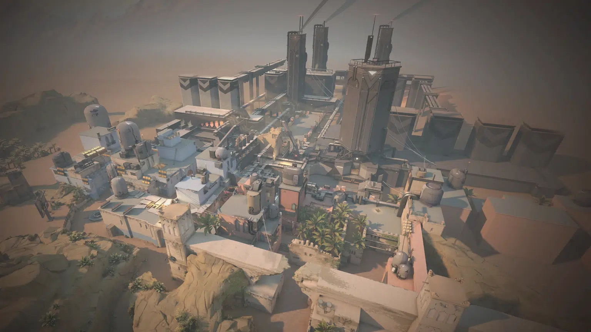
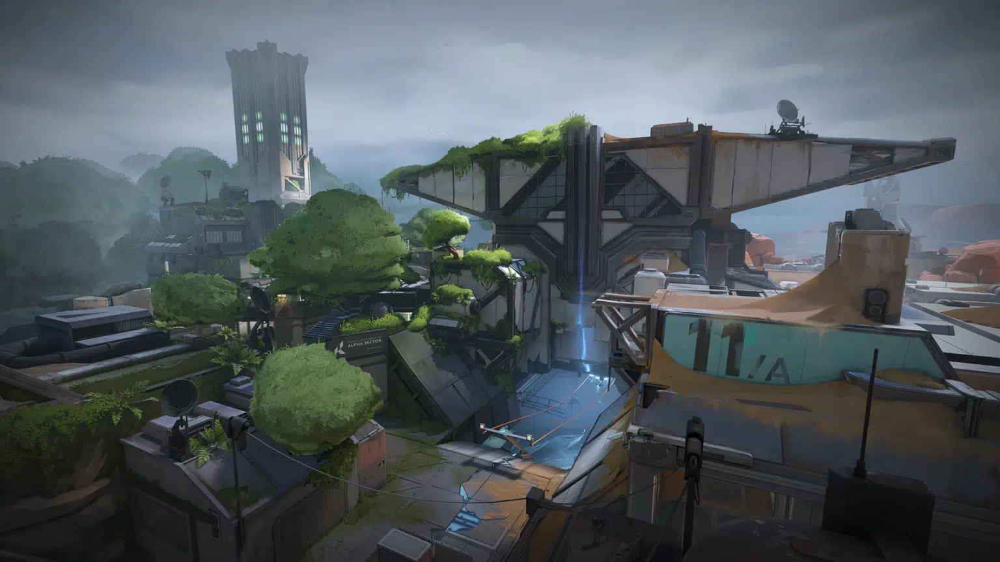
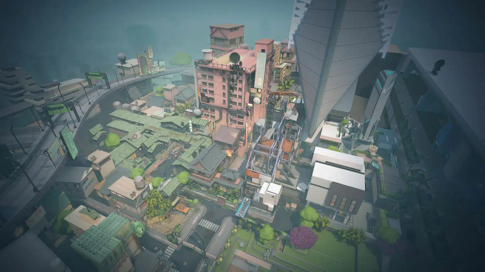

Gallery
Map - Map Valorant Sampai Versi Saat Ini
Valorant map kini memiliki tujuh peta yang memiliki tema dan karakter wilayah yang berbeda. Game ini menyediakan map dengan mengambil nuansa tempat-tempat berkesan yang ada di dunia nyata.
Permainan ini dibuat dan dikembangkan oleh perusahaan sekaligus penerbit game terkenal asal Amerika Serikat, yaitu Riot Games. Perusahaan asal Los Angeles ini selalu membuat event kompetisi esports berskala internasional atau dunia, salah satunya game Valorant.
Valorant sedang hype dan digandrungi oleh para gamer karena menyajikan game dengan sistem FPS berjenis tactical shooter yang dilakukan oleh dua tim berlawanan. Game ini mengingatkan permainan Point Blank. Karena sistem permainan dilakukan dengan tim penjaga dan tim penjahat.
Yang membedakan adalah kualitas grafis di dalam permainan dan variasi serangan serta tersemat skill-skill menarik di dalamnya. Selain itu, setiap tim hanya diisi oleh 5 orang saja dengan roleplay yang berbeda-beda pula. Orang atau karakter di dalam game online ini dikenal dengan sebutan ‘Agent’. Berikut adalah Valorant map names.
1. Ascent

Ascent dianggap sebagai map favorit fans Valorant dengan desain aroma Venesia-Italia. Layout dan garis pandang yang khas membuatnya disukai para pemain yang gemar terlibat dalam pertempuran jarak jauh maupun jarak dekat.
2. Bind

Bind menjadi menonjol dalam Valorant karena teleporternya yang khas, sebuah fitur yang tidak dapat ditemukan di map lainnya. Teleporter ini memberikan pemain kemampuan untuk menavigasi medan tempur, menuntut kewaspadaan dan adaptabilitas yang konstan dengan cepat.
3. Breeze

Breeze adalah map Valorant dengan tema pantai. Dengan layout yang luas dan garis pandang jarak jauh, Breeze menguji kemampuan pertempuran jarak jauh para pemain sambil menavigasi ruang terbuka.
4. Fracture

Fracture memiliki kisah sebagai laboratorium untuk riset-riset rahasia dan berbahaya. Para peneliti tersebut mengalami sebuah kegagalan dalam riset eksperimen radianite yang memantik ledakan dan hancurnya fasilitas lab
5. Haven

Haven memiliki tiga site spike yang membedakannya dari map-map Valorant lainnya. Layout ini sangat menantang pemain untuk selalu mendesain ulang strategi. Map ini menciptakan lingkungan yang cocok untuk kreativitas taktis dan inovasi dalam bermain.
6. Icebox

Icebox merupakan wilayah milik KNG Shipping Co., sebuah perusahaan yang bergerak di bidang penggalian logam-logam rahasia di daerah Arktik. Lokasi ini memiliki fitur Zipline untuk menghubungkan daerah satu sama lain.
7. Lotus

Lotus adalah map tiga site kedua di Valorant. Dia memperkenalkan fitur unik yang menghasilkan setting menarik. Map ini juga memiliki pintu berputar di sisia A dan C, serta dinding yang dapat dihancurkan antara A Main dan A Link, sehingga menghadirkan sejumlah pilihan strategi dan tantangan untuk dikuasai oleh pemain.
8. Pearl

Pearl adalah peta tiga jalur dua situs. Pearl dirancang sebagai peta yang lebih tradisional. Hasilnya, Pearl adalah peta pertama yang dirilis yang tidak mengandung elemen dinamis atau kaitan mekanis apa pun untuk gameplay.
9. Split

Map Split memiliki fitur yang khas karena medannya yang rumit, lorong-lorang sempit yang menawarkan pengalaman taktis berbeda. Pemain dipaksa beradaptasi terhadap tantangan dalam menavigasi posisi yang tinggi dan di level ground, sehingga menciptakan pertempuran yang sengit.
10. Sunset

Sunset adalah salah satu peta VALORANT yang lebih tradisional dengan dua situs dan tiga jalur. Salah satu fitur tambahannya adalah pintu mekanis yang terdapat di antara B Market dan Mid Courtyard. Pemain dapat menggunakan tombol di sisi pintu Pasar untuk menutup atau membukanya.